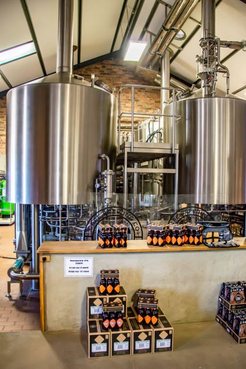
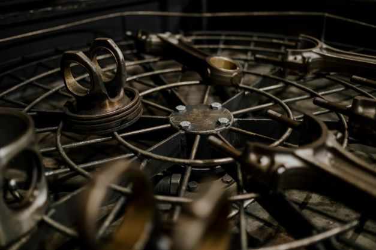

is a Data Scientist skilled in Excel, SQL, Power BI & Python. I am a graduate of Tech4Dev, where I completed an intensive training in Data Science and AI through a Scholarship program within the Women Techsters Fellowship. I am focused and result-driven, with unquenchable thirst for continuous skill acquisition. I have the passion to help business owners derive meaningful insights from their day-in-day-out data in order to inspire them towards making informed decisions that will eventually lead to business growth and expansion.
In this portfolio, you will get to view some of my accomplished projects and how I have deployed my interesting data skills in exploiting realtime business datasets using essential data science tools
.

In this Project, I explored the bike_buyers dataset gotten from an online data repository. I explored, cleaned and visualized the data before finally building a fascinating Bike_buyer Dashboard with it in order to generate actionable insights to promote bike sales.
Full Project
I explored the Financials_datasets and created a report on Power BI.

This Project is based on the international breweries data recorded for a duration of three
years. I performed data querying and analysis using SQL (PostgreSQL). This was in
order to aid better decision making that will lead to profit maximization and reduce loss
to the lowest minimum.

This Project is based on sales analysis of a company that sells motorcycle spare parts. Using the Python environment (Jupyter), I performed data analysis on the company's sales data in order to generate actionable insights that will result to increase in sales of their products.